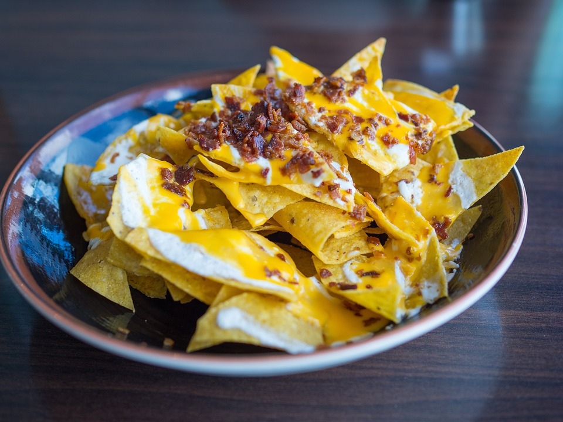

Nachos

Description
An extremly versatile and delicious mexican dish. Endless possibilities, only limited to your imagination.
Ingredients:
- Sour Cream
- Tortillas
- Colby Cheese (or the one you like most, or multiple cheeses)
- Tomatoes
- Onions
- Protein of your choice (chicken, beef, pork, fish...)
- Garlic
- Salt
- Black pepper
- Chili of your choice (not really optional but as much as you like)
- Olive oil
- Black olives
- Cilantro
- Lime juice
Steps:
- Dice cut the onions, and tomatoes and mix them in a bowl together with ground black pepper and salt.
- Add finely chopped garlic, sliced chili of your choice, and sliced black olives to the bowl.
- Finely cut the cilantro and add it to the bowl, also lime juice as much as you prefer, and mix it with a little of olive oil. Set aside the bowl for now.
- Cut tortillas into triangles o any shape you enjoy the most. Fry them until crispy.
- Put fried tortillas in a bowl and add cheese on top. Blow torch the cheese until it melts.
- Add the onion-tomato-chili mix (pico de gallo) to the fried tortillas with cheese. You've got nachos!
- Enjoy the little heaven you've created for yourself, well done.
- Optional: Add sour cream and the protein of your choice.